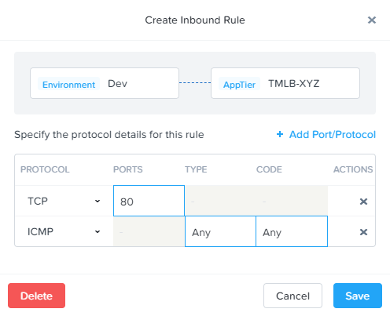
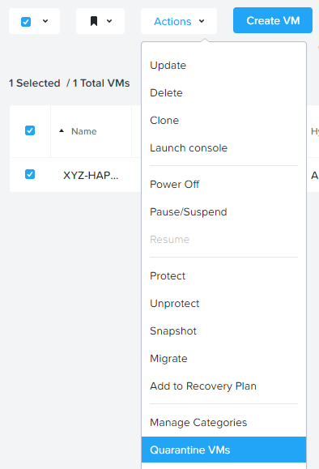
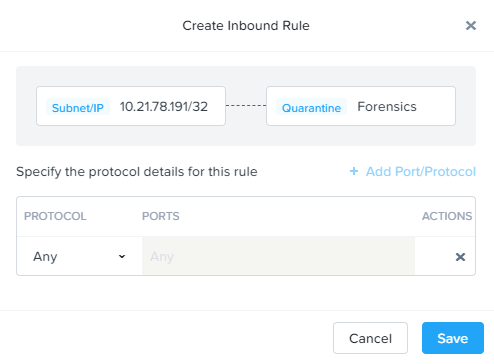

Quarantine¶
Quarantining a VM¶
In this task we will place a VM into quarantine and observe the behavior of the VM. We will also inspect the configurable options inside the quarantine policy.
Return to the Initials-WinClient-0 console.
Open a Command Prompt and run
ping -t HAPROXY-VM-IPto verify connectivity between the client and load balancer.Note
If the ping is unsuccessful you may need to update your Inbound Rule for Environment:Dev to AppTier:Initials-TMLB to include Any as the Type and Code for ICMP traffic as shown below. Apply the updated AppTaskMan-Initials policy and the ping should resume.
In Prism Central > Virtual Infrastructure > VMs, select your Initials-HAPROXY-0… VM.
Click Actions > Quarantine VMs.
Select Forensic and click Quarantine.
What happens with the continuous ping between your client and the load balancer? Can you access the Task Manager application web page from the client VM?
In Prism Central, select > Virtual Infrastructure > Policies > Security Policies > Quarantine to view all Quarantined VMs.
Click Update to edit the Quarantine policy.
To illustrate the capabilities of this special Flow policy, you will add your client VM as a “forensic tool”. In production, VMs allowed inbound access to quarantined VMs could be used to run security and forensic suites such as Kali Linux or SANS SIFT.
Under Inbound, click + Add Source.
Fill out the following fields:
- Add source by: - Select Subnet/IP
- Specify Your WinClient VM IP/32
To what targets can this source be connected? What is the difference between the Forensic and Strict quarantine mode?
Note that adding a VM to the Strict Quarantine policy disables all inbound and outbound communication to a VM. The Strict policy would apply to an VMs whose presence on the network poses a threat to the environment.
Click the icon to the left of Quarantine: Forensic to create an Inbound Rule.
Click Save to allow any protocol on any port between the client VM and the Quarantine: Forensic category.
Click Next > Apply Now to save and apply the updated policy.
What happens to the pings to the load balancer after the source is added? Can you access the Task Manager web application?
You can remove the load balancer VM from the Quarantine: Forensic category by selecting the VM in Prism Central and clicking Actions > Unquarantine VMs.
Takeaways¶
What are the key things you should know about Nutanix Flow?
- In this exercise you utilized Flow to quarantine a VM using the two modalities of the quarantine policy, which are strict and forensic.
- Quarantine policies are evaluated at a higher priority than application policies. A quarantine traffic can block traffic that would otherwise be allowed by an application policy.
- The forensic modality is key to allow limited access a quarantined VM while the VM is quarantined.